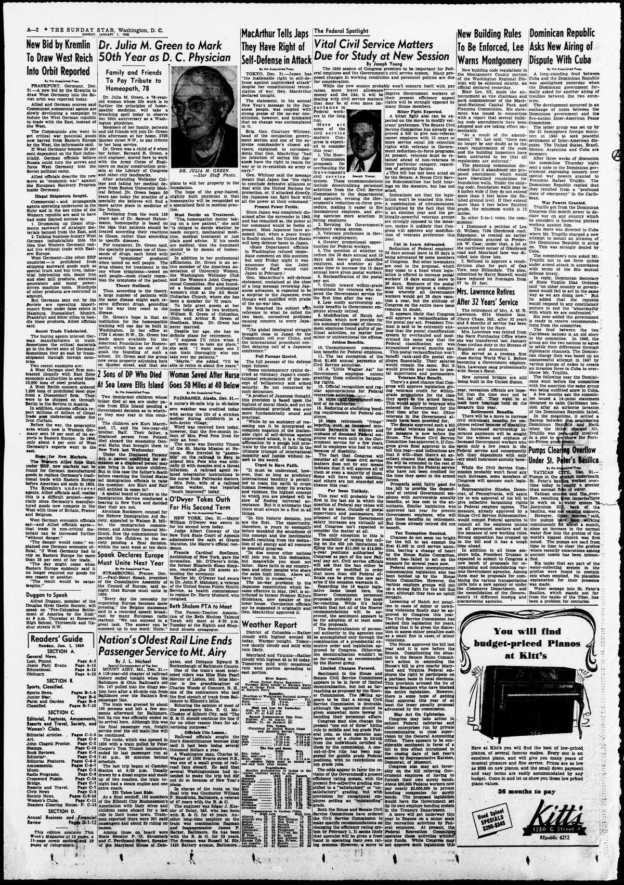

Dominican Republic
https://www.loc.gov/resource/sn83045462/1950-01-01/ed-1/?sp=2

See the original pageVer la página original
Asks New Airing of
Dispute With Cuba
By the Associated Press
A long-standing feud between Cuba and the Dominican Republic was spotlighted yesterday when the Dominican government formally asked for another airing of troubles between the two countries.
The development occurred in an exchange of notes between the Dominican government and the five-nation Inter-American Peace Committee.
The latter group was set up by the 21 hemisphere foreign ministers in 1940 to seek peaceful settlement of Inter-American disputes. The United States, Brazil, Mexico, Argentina and Cuba are members.
After three weeks of discussion the committee Thursday night sent a note to the Dominican government expressing concern over special war powers granted to President Rafael Trujillo. The Dominican Republic replied that they resulted from a “profound state of emergency” in the Caribbean.
War Powers Granted.
Trujillo got from the Dominican Congress this month power to declare war on any country which he considers is harboring plotters working against him.
The move was directed to Cuba where Mr. Trupillo charged a new attempt to mount an invasion of the Dominican Republic is going on. This was strongly denied by Cuba.
The committee’s note asked Mr. Trujillo not to use force unless under armed attack in accordance with terms of the Rio mutual defense treaty.
In reply, Dominican Secretary of State Virgilio Diaz Ordonez said “no other country or government would fail to act in the same way as we are doing now.” But he added that the republic would respond to any conciliatory gesture to end the “abnormality with which we are confronted.”
His note added the government is ready to receive recommendations from the committee.
The feud between the two Caribbean nations is an old story to the committee. In 1948, the group got the two nations to agree to settle their differences through diplomatic channels. The Dominican charge then was based on an unsuccessful attempt in 1947 by various groups of exiles to create an invasion force in Cuba to overthrow Mr. Trujillo.
The following year the Dominicans went before the committee with the assertion the same group was being outfitted anew in Cuba.
A few months ago the committee issued a 14-point statement designed to calm Caribbean tension after an airborne invasion of the Dominican Republic failed.
In the meantime, it settled a flareup between the neighboring Dominican Republic and Haiti when the latter charged Mr. Trujillo was personally involved in a plot to ove-thorw the Port-au-Prince government.
How to cite this articleCómo citar este artículo
Evening Star. (1950). Washington, D.C., January 1, 19501 de enero de 1950. DR in the American PressRD en la Prensa Norteamericana. Library of Congress, Chronicling America: https://www.loc.gov/resource/sn83045462/1950-01-01/ed-1/?sp=2
ReferencesReferencias
Library of Congress, Chronicling America: Evening Star, January 1, 19501 de enero de 1950.
Send an observationEnviar una observación
Does this article connect with your family, your town, or something you know? Did we get something wrong? Write to us. Observations go to the editor's inbox and are read by a person.¿Este artículo conecta con su familia, su pueblo o algo que usted conoce? ¿Nos equivocamos en algo? Escríbanos. Las observaciones llegan al buzón del editor y las lee una persona.
Send observationEnviar observación